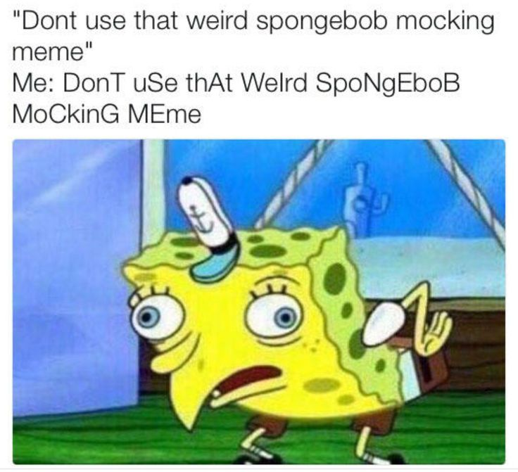
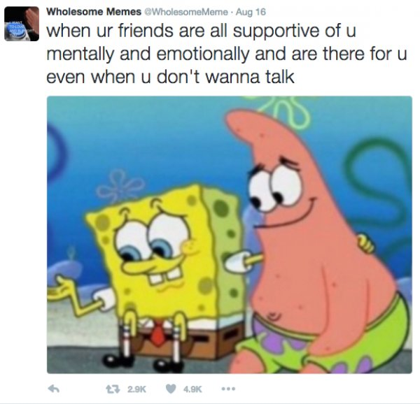

MEMES 101
Meme
/mēm/
noun
an element of a culture or system of behavior that may be considered to be passed from one individual to another by non-genetic means,
especially imitation.
a humorous image, video, piece of text, etc. that is copied (often with slight variations) and spread rapidly by Internet users.
Source: Google
Memes have become an integral part of the average teenager’s data consumption. These images or videos,
often accompanied by some text, are widely circulated through different social media platforms and are almost
impossible to miss in the 21st century. They often originate from a person or event that has gone viral, and
variations with different captions are made to represent the situation to make it funny or relatable. Photoshop
is often used to alternate the content of the image or video, not so much to make it unrecognizable, but enough
for there to be a noticeable difference to build context for the text caption. The diverse categories of memes
available cater to different audiences. The different types are the following:
>Edgy Memes<
These memes are often offensive and contain dark humour, and therefore do not attract a large audience.
Most people find these memes socially unacceptable and politically incorrect.
They can be found in unpopular, less followed meme pages or in the dark recesses of reddit.

>Normie Memes<
These memes are for based off of mainstream humor and are for the average person.
Thus, there is usually a large audience to view and share the content. They can be
found on popular meme accounts that are well-known and often show up on your explore page.
They are often re-posted across several platforms, which results in the death of the meme.

>Wholesome Memes<
These memes are less about humor and more about making the viewer feel better about themselves.
They are designed to make people happy and are on the opposite end of the spectrum from edgy memes.
Most people find these memes tolerable, but they aren’t the peak example of a “good” meme in terms of humor.
They can be found floating around self-care pages and are usually shared with friends.

>Dank Memes<
These are old memes that have been overused to the point where they are incorporated into people’s daily lives,
and are used as verbal reactions to real-life events. People who speak through memes are usually drawing from dank
memes. Although they have decreased in popularity, their legacy continue to live on.